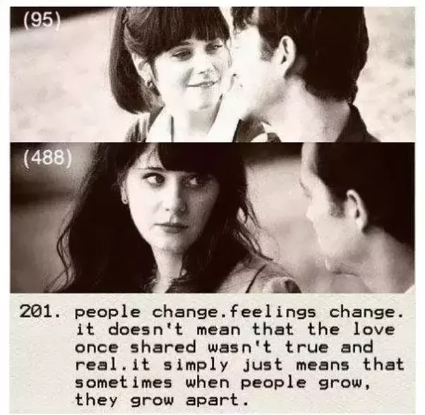
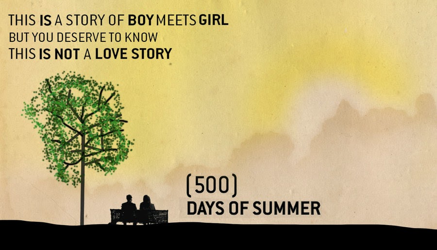
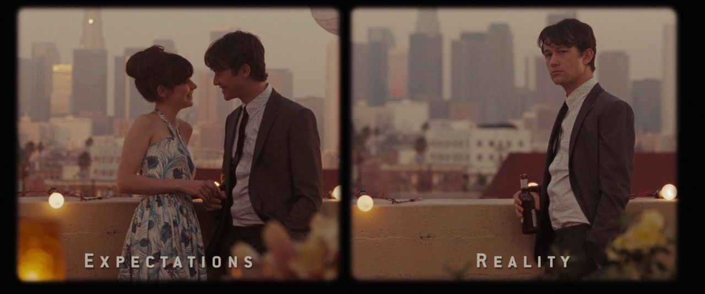
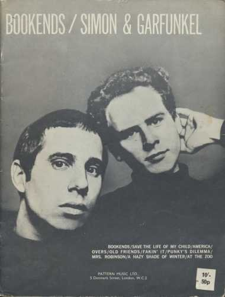

Bookends - 영화 '500일의 섬머' 속 가사 해설
게시: 2019-04-25T06:30:51+09:00
'500일의 섬머'라는 2009년도 영화가 있습니다. 공짜를 좋아하는 저는 또 케이블 TV로 봤지요. 원래 독립 영화로 만들어진 이 영화는 Fox Searchlight Pictures가 배포를 맡아 선댄스 영화 페스티벌에서 최초 상영되었고, 의외로 좋은 평가와 인기를 끌어내어 제작비 750만불의 8배인 6천만불의 매출을 올렸습니다.

(사람들은 변해. 감정도 변하고. 그게 한때 나눴던 사랑이 진실되지 않았다던가 진짜가 아니었다는 이야기는 아니야. 다만 그건 사람들이 성장할 때, 때로는 서로 멀어지는 방향으로 성장한다는 뜻이지.)
배트맨 시리즈 The Dark Knight Rises에서 로빈 역으로 나와서 잘 알려진 조셉 고든-레빗(Joseph Gordon-Levitt)이 주연을 맡은 이 영화는 한줄 요약하면 잘 풀리지 않은 사랑과 그로부터 벗어나는 과정에 대한 이야기입니다. 그럴 나이가 되어서 그런지 모르겠으나 요즘 여성 호르몬이 뿜뿜하고 있는 제게 이 영화는 정말 재미있었고 또 작은 감동도 주었어요. (원래 제 꿈은 회사 때려치우고 무협지를 쓰는 것이었는데, 호르몬 뿜뿜 때문인지는 모르겠으나 요즘은 30~40대 여성들을 위한 로맨스 소설을 써볼까 생각 중입니다. 10대~20대에게는 하이틴 로맨스 시리즈가 있어서 전 안될 것 같아요...) 특히 저는 이 영화 시작 부분에 아래의 자막이 나오는 것을 보고 완전히 꽂혀 버렸습니다. Any resemblance to people living or dead is purely coincidental… Especially you, Jenny Beckman… Bitch. 살았건 죽었건 어떤 사람들과 닮은 듯 하다면 그건 순전히 우연일 뿐이다. 특히 너 말이야, 제니 벡맨... ㅆ뇬.

검색을 해보니 이건 정말 이 영화 시나리오 작가의 100% 사심을 담은 문구더군요. 이 영화에서처럼 어떤 여자와 사랑 비슷한 썸을 탔다가 결국 잘 풀리지 않아서 상심이 컸던 시나리오 작가 뉴스타터(Scott Neustadter, 독일식으로는 노이슈타터겠지만 미국인이니까 아마 뉴스타터라고 읽을 듯...)는 이 여자에게 복수하기 위해서 이 시나리오를 썼다고 뉴스 인터뷰에서 밝혔습니다. (출처 : https://www.dailymail.co.uk/tvshowbiz/article-1209556/500-Days-Summer-Revenge-writing-film-girl-dumped-you.html ) 아마 저렇게 여자 실명을 밝혀도 되는가 라고 놀라는 분들이 많으실텐데, 제니 벡맨이라는 이름이 그 여자의 실명인지 여부에 대해서는 작가가 언급을 거부했다고 합니다. 결과적으로 이 영화는 비평가들에게서도 호평을 받았고 특히 상업적으로도 큰 성공을 거두어서 뉴스타터를 출세시켜주었고, 여친에게 차인 상심에서 벗어나게 해주었습니다. 특히, 이 인터뷰 당시 뉴스타터는 이미 다른 여친과 사귄지 2년이 되었는데, 너무나 행복하다고 자랑스럽게 (또는 누구 보라는 듯이) 밝혔습니다. 다만 그럼에도 불구하고 제니 벡맨, 즉 예전 여친과 어떻게 또 연락이 되었나 봐요. 뉴스타터에게는 매우 실망스럽게도, 정작 제니 벡맨은 그 영화 속 여주인공인 섬머가 사실 자기 자신을 그린 것이라는 것을 전혀 알아보지 못했다고 합니다. 그러니까 아마 남자 마음 속에 남아있는 예전 여친의 모습과 기억들은 실제 예전 여친과는 많이 달랐던 모양이에요. 아마 이건 상심한 남자 뿐만 아니라 여자든 남자든 모든 사람에게 다 동일할 것 같습니다. 사람은 원래 자기가 듣고 싶은 것만 듣고 믿고 싶은 것만 믿으며, 기억도 자기 멋대로 왜곡해서 마음 속에 저장해둡니다. 실제로 저도 와이프와 한 20년 전 이야기를 하다보면 서로의 기억이 완전히 다르다는 것에 굉장히 놀라곤 합니다.

이 영화 속에는 주인공이 춤추고 노래하는 장면도 일부 나오기 때문에 이 영화는 제 67회 골든글로브 시상식에서 뮤지컬-코미디 부문 작품상 후보로 오르기도 했습니다. 남자 주인공인 고든-레빗도 뮤지컬-코미디 부문 남우주연상 후보로 올랐고요. 그러나 이 영화에서 가장 제 심금을 울렸던 음악은 제가 중고등학교 때 들었던 사이먼&가펑클의 Bookends 라는 삽입곡이었습니다. 이 노래는 남녀 주인공이 이별 비슷한 것을 하는 쓸쓸한 장면에 백그라운드 음악으로 낮게 나왔는데, 그 쓸쓸한 기타 연주와 쓸쓸한 가사가 정말 마음에 와 닿더라고요. 중고등학교 때도 몰랐지만 (그떄는 사실 이 노래 제목도 몰랐습니다), 지금도 왜 이 노래 제목이 Bookends 인지는 모르겠습니다. 참고로, bookends라는 것은 책상이나 선반 위에 책들을 세워놓을 때, 맨 가장자리의 책이 넘어지지 않도록 책 옆에 끼워놓는 받침대 같은 것을 뜻합니다.


영화 장면과 함께 나오는 사이먼&가펑클의 Bookends는 아래에서 감상하세요. https://youtu.be/ddvCWyEFqyM Bookends (책받침 한쌍) Time it was And what a time it was It was a time of innocence A time of confidences 좋은 시절이었어요 정말 굉장한 시절이었지요 순진함의 시절이었고 자신감의 시절이었지요 Long ago, it must be I have a photograph Preserve your memories They're all that's left you 아주 오래전이었을 거에요 제겐 사진이 한 장 있어요 추억을 간직하세요 당신에게 남은 건 그것 뿐이니까요 By Paul Simon